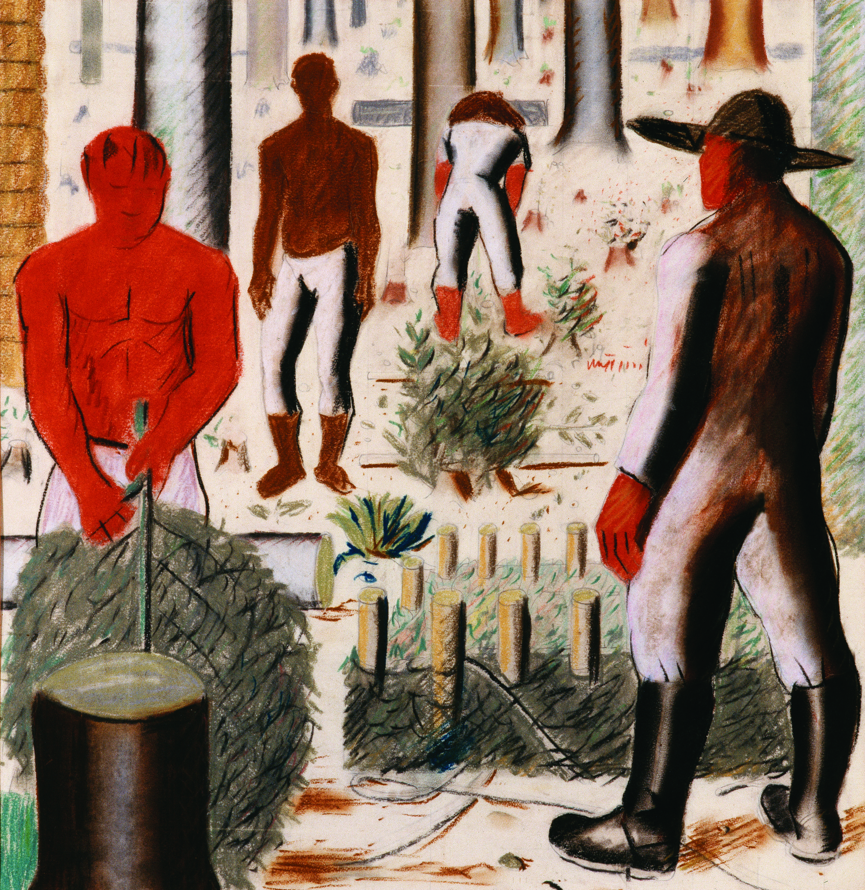
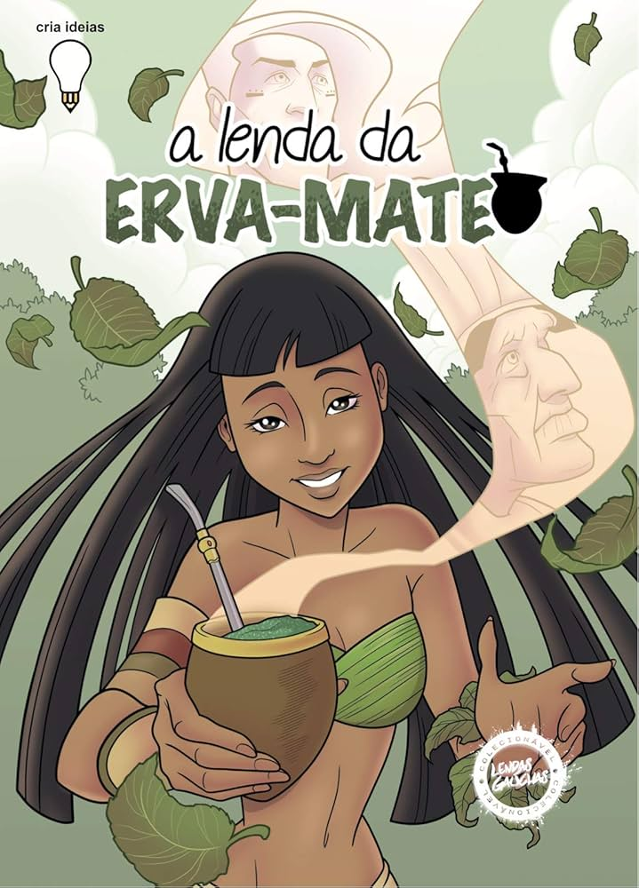
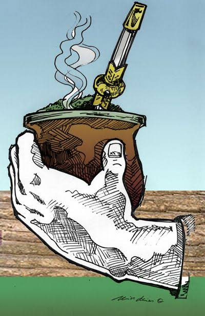

BEM VINDOS(As) AO SITE
O site mostra como os artistas paranaenses usam a erva mate em suas artes,fala quando começou, quem começou e quem usa

DESDE QUANDO USAM A ERVA MATE
Os artistas paranaenses retratam a erva mate desde do final so século XIX e o inicio do século XX, artistas como Alfredo Andersen registraram cenas tradicionais da planta e seu beneficiamento, como a famosa tela O Sapeco da Erva Mate.

IMPORTANTE POIS ELA INSPIRA ARTISTAS
a importância se da pelo fato da erva mate seja um ícone paranaense estando presente na bandeira e muita usada nas artes

curiosidades
curiosidade 1
Paranismo, um movimento artístico regional das décadas de 1920 e 1930 que usou a planta, junto com a araucária, para criar a identidade visual e cultural do estado.
curiosidade 2
Símbolo oficial da pátria paranaense: Artistas como o escultor João Turin colocaram a erva-mate, o pinheiro e o pinhão no centro de pinturas, relevos e arquiteturas para dar ao Paraná um senso de orgulho próprio longe da influência de São Paulo e do Rio.